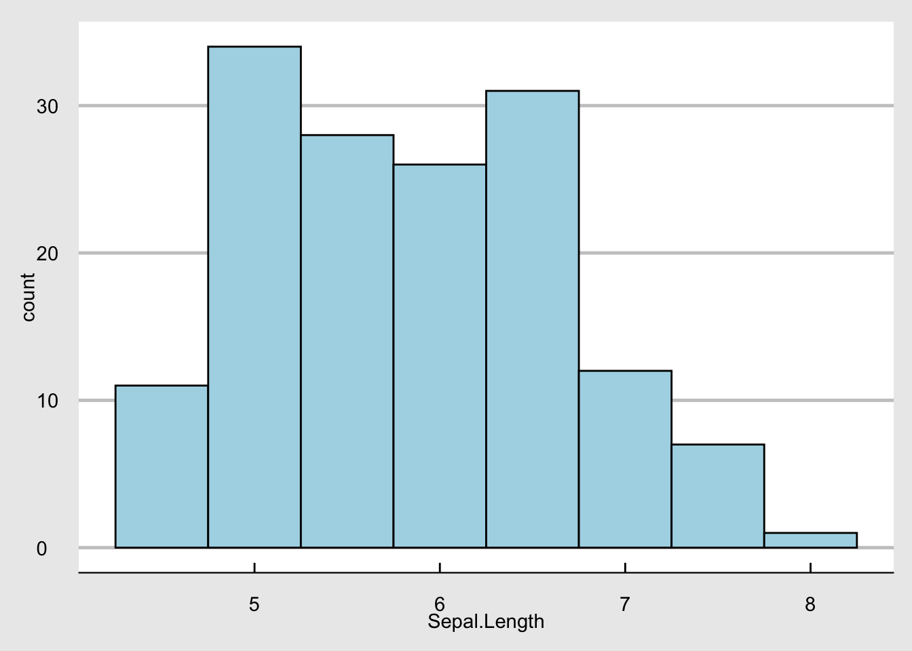

Rによる計量政治学の勉強
第0章 プレゼミとは？
松浦プレゼミ2023では、データに強い経営学部生となるため、データ分析のツールとしてもはやデファクトスタンダードとなっている(いいすぎ)プログラミング言語Rを使って、様々な分析を行うためのスキルの修得を目指します。 株価データや会計データ、POSデータといったデータベース以外にも、自分で集めたアンケートのデータや、Webスクレイピングで集めたデータなど、様々なデータを分析することができるスキルは、会計・ファイナンスだけでなく、組織、戦略、マーケティングと様々な分野で役に立つはずです。
なぜR？
メリット
- 無料
- 学習しやすい・教材たくさん
- 卒業後も使える (大学で購入しているSPSSとかStataは買うと高い)
- なんかかっこいい
デメリット
- データを命令文で操作するので、見た目にわかりにくい。
- マウスではなくキーボードで文字を入力してデータを操作するので、キーボード入力に慣れてないと辛い。
- R言語の文法と単語を覚えなきゃいけない
MS Excelだとダメなの？
メリット
- みんな使ってる。
- 就職しても使いそう
- 画面の表示が理解しやすい
デメリット
- 有料 (立命館大学生のうちは無料で利用可能)
- マウスで何度もポチポチしないと何も出来ない
- 過去のExcelファイルを見て、自分が何をしたのか思い出せない
- アプリが思い、すぐ強制終了する
- グラフのデザインが悪い
Rでどんなことができる？
1. キレイなグラフが書ける。
irisという有名なデータを使って、グラフを作ってみます。irisは「あやめ」という花の花びらとがく片の長さと幅の4項目と3種類のあやめの分類名の1項目の合計5項目が150件収録されているデータベースです。Rには練習用にもともと入っているので、読み込んでみます。
head(iris) # 最初の6行だけ Sepal.Length Sepal.Width Petal.Length Petal.Width Species
1 5.1 3.5 1.4 0.2 setosa
2 4.9 3.0 1.4 0.2 setosa
3 4.7 3.2 1.3 0.2 setosa
4 4.6 3.1 1.5 0.2 setosa
5 5.0 3.6 1.4 0.2 setosa
6 5.4 3.9 1.7 0.4 setosaこのように、Sepal.Length、Sepal.Width、Petal.Length、Petal.Width、Speciesという5つの項目が入っていることが分かります。Sepalは花びらで、Petalはがく片です。まず花びらの長さSepal.Lengthの平均を求めてみましょう。平均を返す関数はmean()です。
mean(iris$Sepal.Length)[1] 5.843333あやめの花びらの長さの平均は、5.8433333であることが分かりました。簡単ですね。 次に、あやめの種類を表すSpeciesにはどんな種類があるのか見てみましょう。 Speciesに入っている種類を確認するには、table()関数を使ってみます。
table(iris$Species)
setosa versicolor virginica
50 50 50 あやめの種類には、setosa、versicolor, virginicaがあり、それぞれ50個のデータがあることが分かります。
では次にグラフを作成してみます。 最初に、花びらの長さのヒストグラムを書いてみます。 ここでは、非常に便利かつ簡単に美しいグラフを作成できるggplot2パッケージを使うために、tidyverseパッケージを導入します。
# install.packages("tidyverse") # 1回だけ実行
library(tidyverse)
g <- ggplot(iris) + aes(Sepal.Length) +
geom_histogram()
print(g)
地味なので、グラフを雑誌Economist風にしてみます。
g + theme_economist()
いい感じです。 次は花びらの長さと幅の散布図を書いてみます。 ggplot2で散布図を書くためには、aes()でx軸とy軸を指定し、geom_point()で散布図を指定する。
ggplot(iris) + aes(x = Sepal.Length, y = Sepal.Width) +
geom_point() + theme_economist()カテゴリーを表す変数をgroupとcolourで指定すると、カテゴリーごとにグループ化して、色分けもしてくれます。ここでは花の種類を表す変数であるSpeciesごとに色分けしてみます。
ggplot(iris) + # データセットirisを指定
aes(x = Sepal.Length, # x軸 花びらの幅
y = Sepal.Width, # y軸 花びらの幅
group = Species, # あやめの種類ごとにグループ
color = Species # あやめの種類ごとに色分け
) +
geom_point() + # 散布図を指定
theme_economist() # テーマをEconomistに2. 楽にデータ操作ができる
3.
動くグラフも作れる。
グラフを動かせる。 plotlyパッケージを使えば簡単。
library(plotly)
g <- ggplot(iris) + aes(x = Sepal.Length, y = Sepal.Width) +
geom_point() + theme_economist()
ggplotly(g)